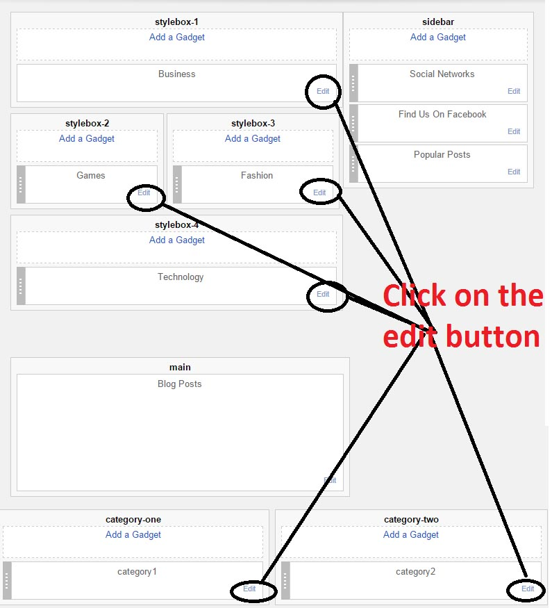
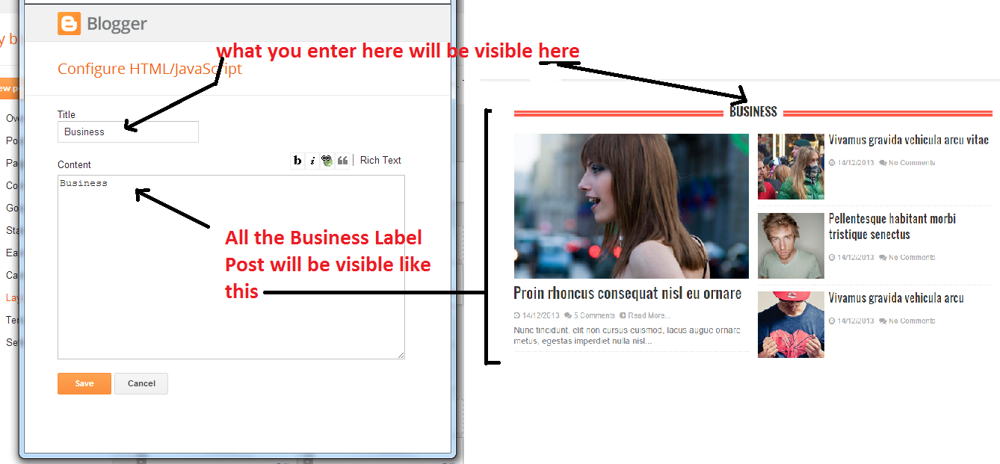
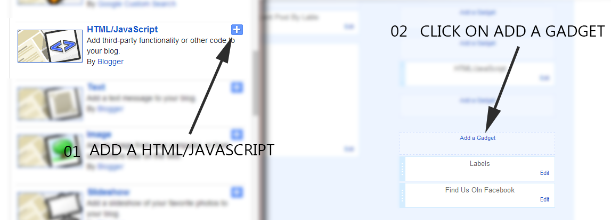
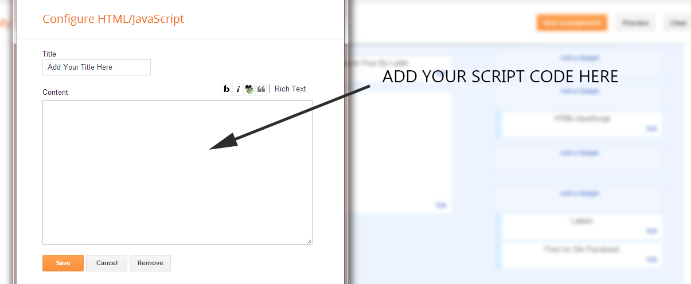

“Aerial Blogger Template” Documentation by “SoraTemplates” v1.0
Aerial
Created: 06/07/2015
By: Soratemplates
Thank you for purchasing my theme. If you have any questions that are beyond the scope of this help file, please feel free to email via my user page contact form. Thanks so much!
Table of Contents
- Installation
- Add Social Links
- Upload Logo
- Setting up the menu
- Setting up the News ticker
- Work with home design
- Flicker Image
- Enable Mobile Template
- Enable Full Feed
- Enable Search Preference
- Author Description
- Installation - top
- Add Social Links - top
- Upload Logo- top
- Setting up the menu - top
- On Blogger Dashbord Click Template
- Click Edit HTML
- (Top Menu) Scroll down and Find this Code :
<ul class='nav menubar2' id='menu-main'> <li> <a class='active' href='/'> <i class='fa fa-home'/> <div id='act'> Home </div> </a> </li> <li> <a href='#'> Business </a> <ul> <li> <a href='#'> Fashion </a> </li> <li> <a href='#'> Fashion1 </a> </li> <li> <a href='#'> Fashion2 </a> </li> </ul> </li> <li> <a href='#'> Fashion </a> <ul> <li> <a href='#'> Sub Menu 1 </a> </li> <li> <a href='#'> Sub Menu 2 </a> </li> <li> <a href='#'> Sub Menu 3 </a> </li> </ul> </li> <li> <a href='#'> Sports </a> </li> <li> <a href='#'> Games </a> </li> <li> <a href='#'> Technology </a> </li> <li> <a href='#'> Download </a> </li> </ul>
- Change # with yours URL link
- To setup News Ticker - top
- Work with home design - top
- Flicker Image - top
- Enable Mobile Template - top
- Enable Full Feed - top Access Settings menu and choose Other settings. Click drop-down list at Allow Blog Feed option, then choose Full. After that, click Save settings button at the top right corner.
- Enable Search Preference - top To improve your blog SEO, please enable Blogger Search Preferences. Access your Settings menu, choose Search preferences tab and click Edit link on Meta tags section
- Author Description - top
Now you have Aerial Blogger Template. You Can Follow This Steps To Upload Your Blogger Template To Blogger Platform. First Login to your Blogger DashBoard by Using Your Google Username And Password from Here.
Then follow these steps:
1. On Blogger Dashboard Click Template.
2. Click Backup/Restore button (Top Right).
3. Click Choose ( Browse..) File button. Find where the “Aerial-Blogger-Template.xml” file location.
4. Then Click Upload.
Note: Before Uploading This Template Mobile Blogger Template Must Enable to make Blogger Customize Work
You Can See that social network on right sidebar area have Social Icons Collection. To Edit Social Icon in this theme you can follow this step:
1. On Blogger Dashbord Click -> layout
2. Click on social network widget Edit button
3. now paste the below code:
<div id="social-media-icons-9" class="cb-sidebar-widget cb-social-media-widget clearfix">
<a href="http://feeds2.feedburner.com/t" target="_blank" class="cb-social-media-icon cb-rss icon-1"></a>
<a href="https://twitter.com/" target="_blank" class="cb-social-media-icon cb-twitter icon-2"></a>
<a href="https://www.facebook.com" target="_blank" class="cb-social-media-icon cb-facebook icon-3"></a>
<a href="https://plus.google.com/" target="_blank" class="cb-social-media-icon cb-googleplus icon-4"></a>
</div>
Access your blog Layout > click Edit link on Header widget
To Edit Main Menu in this theme you can follow this step:
You Can See that Header left side area have Breaking News section. To Edit News ticker in this theme you can follow this step:
1. On Blogger Dashbord Click Template
2. Click Edit HTML
3. Scroll down and Find this Code :
<script type='text/javascript'> //<![CDATA[ $(document).ready(function () { var url_blog = 'http://aerial-SoraTemplates.blogspot.in/', // Replace With your Blog Url
4. Change url with yours blog URL
Aerial supported you build your own home design. In you blog Layout admin, you will see a Left section.
To customize these styles,follow these steps:
1. Go To Blogger >> Layout
2. Then choose the style widget which you want to Customize Then Click On Edit Button.

Then You will See a Popup Window Like Image Given Below. Then Enter your label or category name here. Then Press Save Button.

Same AS above you Have to Customize All other STYLE WIDGETS. <
You Can See sidebar Have Flicker Image Widgets.
Follow this Steps To Add Flicker Widgets
1. Go To Blogger >> Layout
2. Now Click On "Add a Gadget" and Add Your Own Widgets

3. Now Add Your Java Script Here

<div class="flickr_plugin">
<script src="http://www.flickr.com/badge_code_v2.gne?count=8&display=latest&size=s&layout=x&source=user&user=52617155@N08" type="text/javascript">
</script>
</div>
Replace This 52617155@N08 With Your Flicker Id
You Can Use http://idgettr.com/ to generate Your Flicker Id
After you apply mobile version for this template, Advance Editor will be disabled. This is official bug of Blogger. So, please make sure, you used Advance Editor to change all settings you want before do this step.
As default, Blogger will use its own template for you blog on mobile. So if you want to use Aerial template on mobile devices, please enable it first.Access your Template menu and click on Gear button of Mobile template.
 In Choose mobile template window, check "No. Show desktop template on mobile devices." option, then click Save button.
In Choose mobile template window, check "No. Show desktop template on mobile devices." option, then click Save button.


Next, check Yes option, then type your Blog Description into the text field and click Save changes.

Aerial theme have area's where you have to change the author description.
To Edit author description in this theme you can follow this step:1. On Blogger Dashbord Click Template
2. Click Edit HTML
3. Scroll down and Find this Code :
<div class='author-description'>This is a short description in the author block about the author. You edit it by entering text in the "Biographical Info" field in the user admin panel.</div>
Then change this description with your description.
Once again, thank you so much for purchasing this theme. As I said at the beginning, I'd be glad to help you if you have any questions relating to this theme. No guarantees, but I'll do my best to assist.